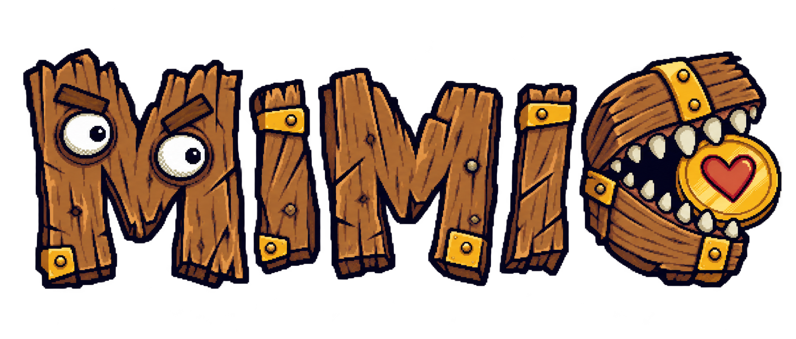
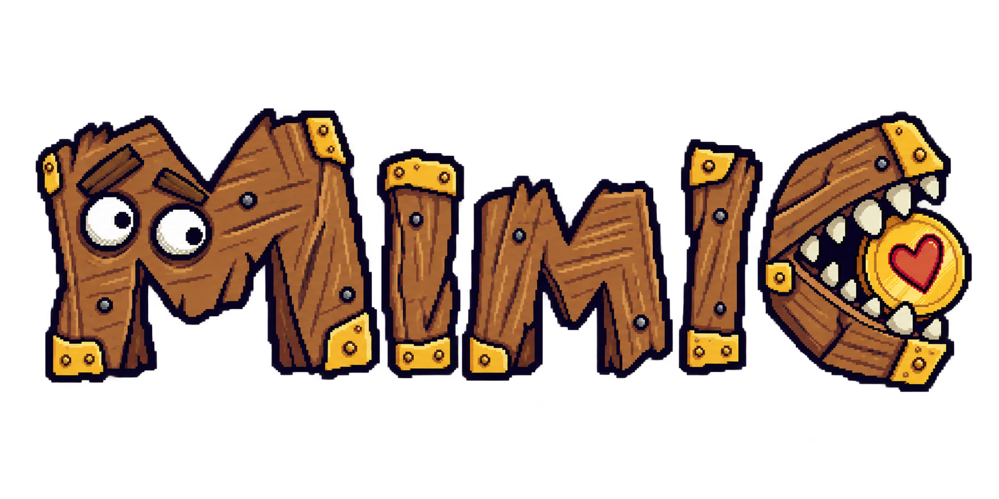
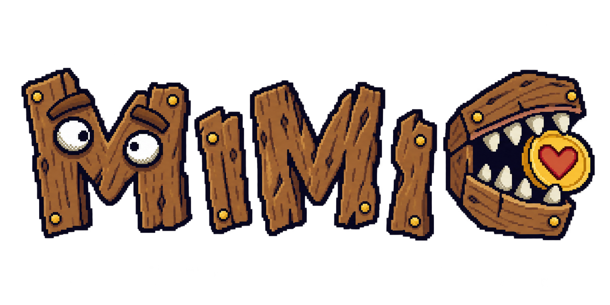
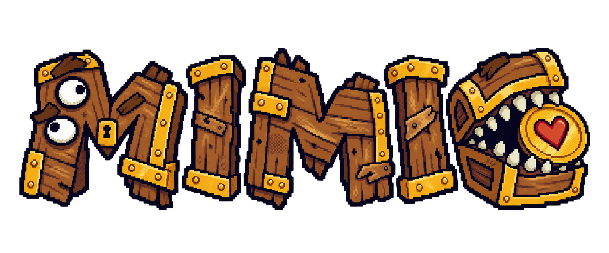
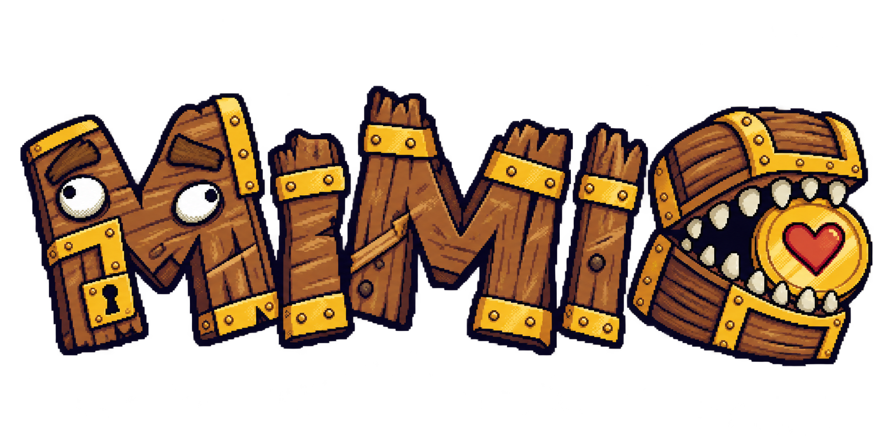
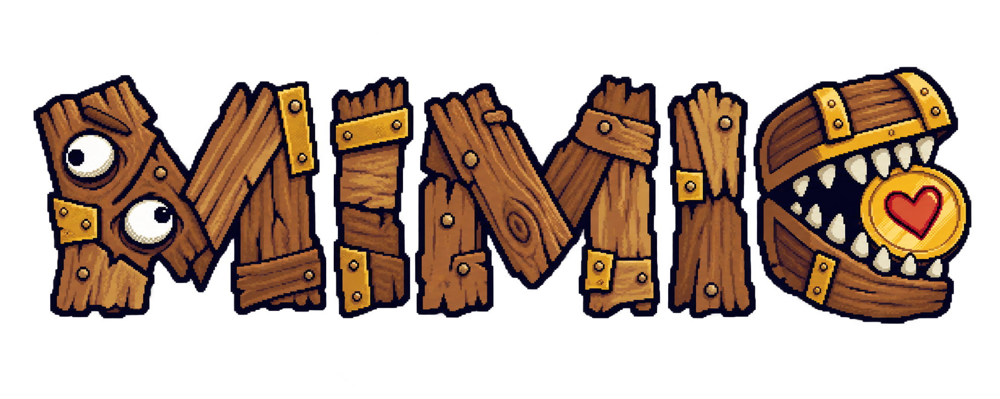

01 · 筆記本草稿
最像先徒手草繪再落到像素格；木板歪斜、接縫較鬆。
這是新的探索稿，不是已批准的 Gate A calibration。每張都以既有 Mimiku master／model sheet 為參考；兩隻失焦眼睛只在第一個 M，C 只有嘴與咬住的愛心金幣。請同時看深藍、羊皮紙及約 240px 的縮小效果。
上一輪 10 版保留供比較；目前正式 review manifest 未改動。
最像先徒手草繪再落到像素格；木板歪斜、接縫較鬆。
輪廓較重、木材斷面與刻痕更明顯，金屬角片很少。

第一個 M 更寬，眉眼較集中；木紋以短線手繪。

木料來源與切口最直觀，像把寶箱拆開後重新釘成字。
色階與零件最少，呆萌眉眼和大字形優先。

每個字以不同角度的短木板重組；金屬只負責固定。
方形像素、階梯輪廓與局部抖色最明顯，保留手描歪斜。

邊緣與木紋更破碎、有刮痕；金屬次要。
字高與基線最活潑，像會動的怪物招牌。

木紋方向與木板色差最大，每字各有形狀，保留粗手繪輪廓。
